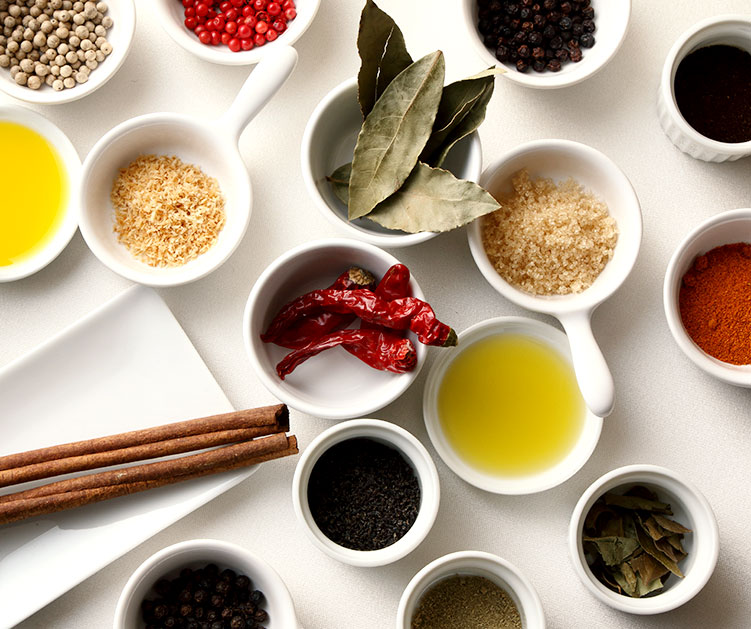
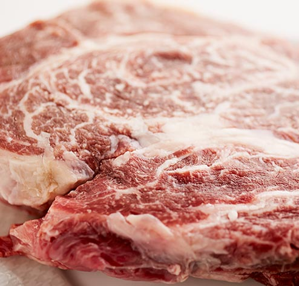
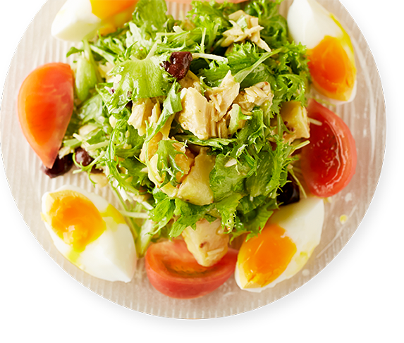
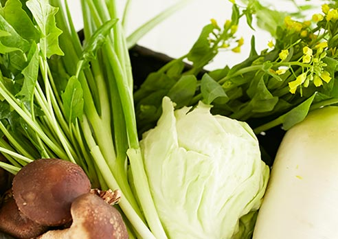

小牧のフレンチレストラン、シェシュシュ ランチ、ディナー、テイクアウトも
素材から調味料まで本物志向
生産者の想いを紡ぐ一皿を

愛知県小牧市に店を構えるフレンチレストラン「Chez Chouchou（シェ シュシュ）」。
当店がお届けする料理は、化学調味料や添加物を一切使わない、身体と心に優しい一皿です。
お肉・海鮮・野菜・調味料…。すべて天然ものや農薬不使用のものを中心とした、生産者さんの顔や想いの分かるものばかり。
お客様の口に入るものだからこそ、当たり前のこととして安全性の高い素材を追求しております。
フランスで学んだ技術や感性を駆使して、シェフのみならず造り手の想いも込めて作り上げる渾身の一皿を、どうぞランチからディナーまでご堪能ください。
きっかけは亡き父への後悔
私が食材・調味料の安全性を追求するようになったのは、父をガンで亡くしたことが始まりです。
それまではシェフとして、料理をいかに美味しくするかしか考えていませんでした。
しかし父の病気が分かり、日々の食事からもっと気を遣っていればもっと健康で長生きできたのでは、と後悔したのです。
毎日食べるものによって細胞規模で身体はつくられていきます。
だからこそ、普段からの食生活が何よりも大切です。
その食材がどんな環境で生産されたのか、使用されている原材
料は何なのか…。
改めて食を考えるきっかけになれば嬉しい限りです。
ウチのお店には極上級の素材が色々あります。
こんな田舎の店に必要なのか？と正直思いますが、シェフが食材に掛ける想いと言ったら年々増していくので仕方がありません。さらに、ここ最近はサラダ油を一切使用しないなど調味料にもこだわり出しました。商売人ではなく、根っからの職人なので原価率がかなり高いんですよねウチ…。その分、お客さんは断然お得だと思いますよ。
フランス国旗を掲げていた頃は、知人だけに特別に用意していて毎回好評だったエスニック料理やカレー、からあげといった裏メニューも今は通常メニューとしてご用意しています。この店でフレンチしか食べたことが無いという方は、ぜひお試しくださいね。
妻 清水より一言
見島牛とは
和牛のルーツと言われている天然記念物。
霜降り自体はさほど多くないものの、赤身の濃厚な旨味が噛めば噛むほど口の中に広がります。
それでいて、脂身のしつこさは微塵も感じずに甘みがあり、この赤身と脂身の絶妙なバランスが見島牛の魅力です。
今までに召し上がったお客様には、「こんな牛肉は口にしたことが無い」と満足していただいています。

なぜ手に入るのか
元々、天然記念物の牛がいるという知識はありました。
そこで調べてみると、「ミドリヤファーム」さんが取り扱っていることが分かったのです。
早速電話しましたが、当然ながら在庫はないとのこと。それでも諦めずに、ホームページを毎日チェックして、出たらすぐに電話するということを繰り返しました。
その中で、何とかお取引が始まりましたが、最初はサーロインしか手に入れることが出来ずに、正直無理をしながら買っていました。2年ぐらい経ったある時、今回も無理だろうな
と思いながらも、物は試しにフィレ肉をお願いしたところ、分けてもらえることに。
あの時の興奮は今でも忘れておりません。年間10頭ほどの流通でしたが、2014年は3頭のみ。
この先は増えることはないと思います。今では出荷が決まると連絡をもらえます。
「アグー豚」と「あぐー豚」は違うもの
沖縄に行くと、よく「アグー豚」と「あぐー豚」の表記を目にしますが、実はしっかりとした違いがあります。
カタカナ表記のアグーは父・母ともにアグー豚の純血種。
それに対して、ひらがな表記のあぐー豚は他の品種との掛け合わせ。当然、味にも違いが出てきます。
他の豚と比べると、赤身部分の旨味の濃さ、脂の甘みが絶妙で、濃厚な旨味を持つのが一番の違い。
今まで食べた豚の中でも1、2を争うほどの味です。
なぜ手に入るのか
オープン当初からお付き合いしていた沖縄の精肉店さんが取扱いをやめたので、他の精肉店さんを紹介してもらいましたが、純血は無いかと質問したところ、そんなのはないと一蹴され、自分で調べたのがきっかけでした。
そしてたどり着いたのが「ゆいまーる牧場」さんです。
電話をしても繋がらない、メールをしても返ってこない。
どうしたものかと思っていた時に、ゆいまーる牧場さんの次女の方が旅行の途中、名古屋でトランジットの際に立ち寄ってくれたのです。
私の料理を気に入ってくれて、ぜひ使ってくれと言ってもらえたことで取引が始まりました。
他のコーチンとの違い
純系名古屋コーチン、正式名称は「名古屋種」。
噛みごたえのある食感と鶏の旨味を存分に味わえるのが特徴です。名古屋コーチンとはいっても、 地鶏に分類されるものと、そうでないものがあります。そのため、名古屋コーチンの中でも品質のバラつきがあるのです。数ある養鶏場の中でも「稲垣種鶏場」さんでは、名古屋コーチンと呼ぶのに、4つの条件を課しています。これにより、しっかりとした品質を保つことができるのです。その条件とは、
①飼育日数が150日
②抗生物質は不使用
③1坪当たり12羽前後の飼育数
④地鶏であること
の4つ。
また、稲垣種鶏場さんでは十分に走り回れる環境を用意しているので、鶏肉は程よく身が締まり、濃い旨味を感じられるのが特徴です。
なぜ手に入るのか
お店をオープンする前から、稲垣種鶏場さんの名古屋コーチンを使いたいと考えていました。
生産者の方と直接話をしていく中で、その姿勢に共感し、
使っていきたいという想いがより強くなったのです。
それが生産者の方にも認められ、当店で取り扱うに至りました。

他の野菜との違い
どの契約農家さんも共通して言えるのは、土作りから手を抜かずにきちんとやっていること。
農薬不使用は当たり前ですが、硝酸化窒素の含有がほぼ皆無なので、嫌なエグミがなく、野菜本来の味を感じることができます。
岐阜
【まめな農園】
野菜を決める中で、基準としている生産者の方。月に一度、勉強会も開催していただけ、農業のすべてについて学んでいます。
三重
【ゆうき農園】
こちらの農園さんの野菜は、自分の舌で確かめて嫌味なく美味しいと感じることができます。
佐賀
【ささき農園】
自然薯はすりおろしてそのまま置いておいても変色しない、見事なクオリティー。理由は酸化還元度がマイナスだからです。2015年3月には九州農政局長賞を受賞されています。

なぜ契約農家なのか
生産者の方の人間性も分かり、本当に安心できて、
美味しいと感じることのできる野菜を作ってくれるからです。
また、農薬を使用しない野菜は、季節ごとの野菜本来の旨味も感じさせてくれます。
さらに、中間業者さんを挟まないので、仕入れコストを抑えられるのもメリット。
その分、お客様にリーズナブルにご提供することができます。
他の魚介類との違い
当店では養殖物を一切使わず、天然物のみを使用。
信頼の置ける仲卸の方と直接話をして、金沢の魚介類を中心に、鮭児は北海道、アラは屋久島など、全国各地から厳選した魚介類を仕入れております。
自然界の厳しい環境で育った天然物ですので、味の濃厚さ、食感、脂のノリ具合も全然違います。
なぜ天然物なのか
養殖技術が上がってきた昨今ではありますが、やはり厳しい自然の中で育ってきた天然物と養殖物ではその味に違いが現れます。
魚が本来持つ旨味成分や脂のノリ。決して作られた環境では生まれることのない特別なものです。
お客様の安心のために
成分を見極める
調理で使う油も、素材や調味料と同様に口から身体に入り、私たちの細胞を形成していくもの。
だからこそ、ここを疎かにするとどれだけ良い素材を揃えた所で意味を成しません。
ノンフィルター製法で作られたトランス脂肪酸ゼロの「オリーブオイル」や、酸化防止剤や保存料一切未使用の「ほうろく菜種油」など、油からこだわっております。
たかが調味料、されど調味料
塩や胡椒など、調理や味付けに使う調味料。
調味料くらいではそう変わらないと思われる方もいらっしゃるかもしれません。
ただ、いかに極上級の素材でも、調味料で味が台無しになることもあります。
ひとつまみで変わる調味料の奥深さ。お客様の口に入るものだからこそ、そこまで追求して、初めて当店の味が作れるのです。